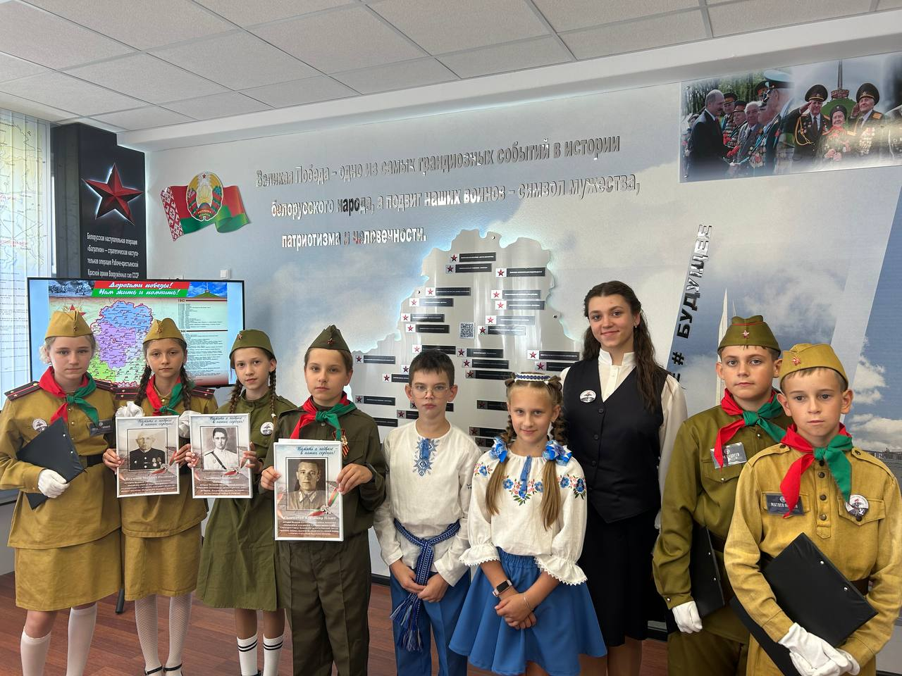
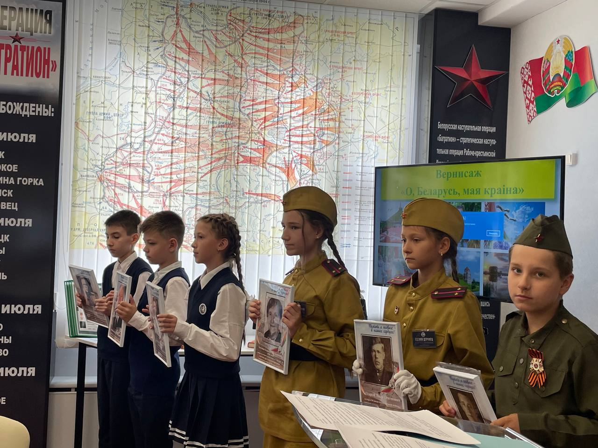

Аллея героев Великой Отечественной войны


Важник Фёдор Михайлович
.jpg)
Ветеран Великой Отечественной войны. Награждён орденом ВОв 2-ой степени, орденом Красной Звезды.
Хохлова Евдокия Емельянова
.jpg)
Узница немецкого концлагеря в г. Жиздра, за тяжёлый труд в послевоенное время награждена медалью "Ветеран труда"
Архипец Иван
Кузьмич
.jpg)
Ветеран Великой Отечественной войны. Награждён оредном Великой Отечественной войны 2-ой степени, медалью "За отвагу"
Бич Александр
Леонтьевич
.jpg)
Ветеран Великой Отечественной войны. Награждён орденом Красной Звезды, орденом Славы 3-ей степени.
Спадар Николай Митрофанович
.jpg)
Воевал в 248 стрелковой дивизии, участвовал во взятии Варшавы и Берлина. Награжден орденом Красной Звезды.
Старый Иван
Семёнович
.jpg)
Ветеран Великой Отечественной войны, танкист, дошёл до Германии. Награждён орденом Великой Отечественной войны 2-ой степени и орденом Красной Заезды.
Макаревич Сергей Устинович
.jpg)
Участвовал в освобождении Варшавы, являлся ветераном ВОв и ветераном Труда СССР.
Трашквич Константин
Михайлович
.jpg)
Ветеран Великой Отечественной войны, блокадник Ленинграда, артиллеристов дошёл до Праги. Награждён орденом Великой Отечественной войны 2-ой степени.
Скриган Денис Илларионович
.jpg)
Ветеран Великой Отечественной войны. Награждён орденом Великой Отечественной войны 2-ой степени.
Пеньковский Николай Михайлович
.jpg)
Ветеран Великой Отечественной войны, нагржден орденом Великой Отчественной войны первой степени, медалями "За Отвагу","За победу над Германией в Великой Отечественной войне 1941-1945".
Сломатин Владимир Ильич
.jpg)
Ветеран Великой Отчественной войны, командир авиационной эскадрильи. Удостоин звания Герой Советского Союза. Награждён орденом Красной Звезды, орденом Ленин, орденом Великой Отвечественной войны 1-ой степени, 2-мя орденами Красного Знамени.
Побойкин Николай Антонович
.jpg)
Принимал участие в партизанском движении, награждён орденом Отечественной войны 1-ой степени.
Игунов Михаил Иванович
.jpg)
Ветеран Великой Отвечественной войны, командир отряда авиаэскадрильи, подготовил 75 лётчиков, совершил более 50 боевых вылетов.
Застаринский Николай Петрович
.jpg)
Воевал на Прибалтийском фронте ротным пулемётчиком, награждён орденом Трудового Крсного Знамени.
Виноградов Василий Алеексеевич
.jpg)